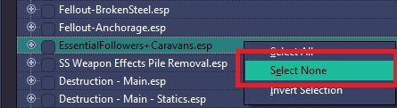
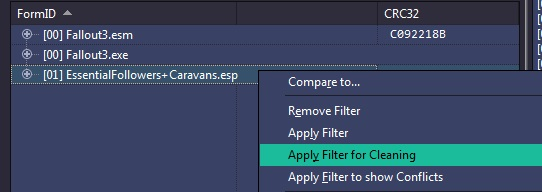
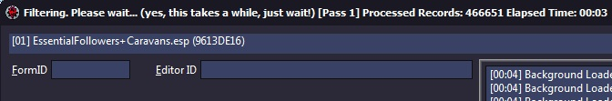
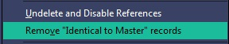
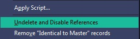
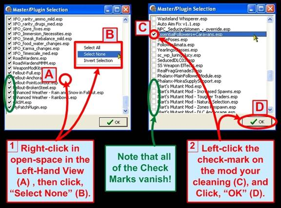
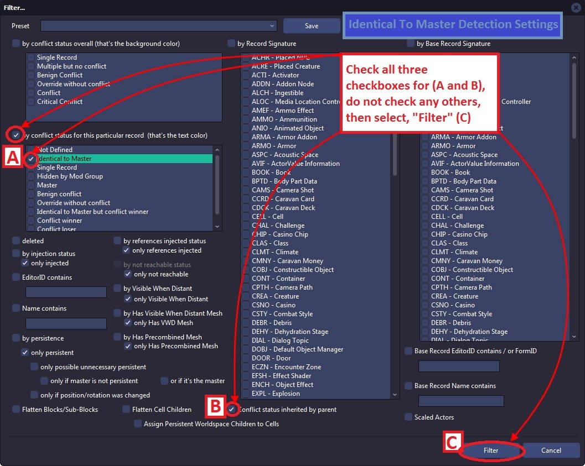
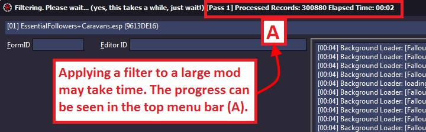
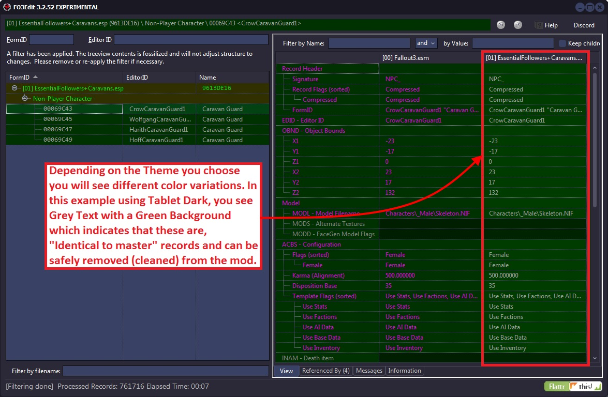

Appendix B
This method is depreciated and preserved as historical information only. Do not ask questions about it. Please refer to the current cleaning method 5.3 Mod Cleaning Process.
Mod Cleaning (Abridged Version)

Right click on the Module Selection window and choose, Select None
Check only the mod you wish to clean

Wait for xEdit to finish loading

Apply the filter for cleaning

Wait for the filter to be applied

Choose Remove "Identical to master" records

Choose Undelete and Disable References

Results are displayed on the Messages Tab

Close xEdit to save the plugin
Appendix E
What is the mod cleaning process anyway?
This method is depreciated and preserved as historical information only. Do not ask questions about it. Please refer to the current cleaning method 5.3 Mod Cleaning Process.
The mod cleaning process involves cleaning a mod file of duplicate/un-necessary records and un-deleting objects in the masters that were inadvertently deleted - setting them to disabled instead. We also check for errors as well as looped level lists. The itemized cleaning process is:
- Identifying and removing records in a mod file that is identical to those in the master files, which user useless in a mod-file and can cause conflicts with other mods. Removing these from your mod file is a primary goal of this process.
- Identifying any records in the master files that was marked as deleted, which xEdit un-deletes and marks as, "disabled" instead. This ensures that any change made to that object by other mods won't cause crashes or conflicts, which can happen if a modder accidentally deletes a base object, which is modified by another mod and you get a null pointer – poof!
- Identifying any infinite loops in the leveled-lists, and ensure there are no physical/data errors with the mod file to round-out the clean-up.

For example, modder A inadvertently double-clicks on a wine bottle and it gets marked for save – becoming one of the changes introduced by modder A's plugin. Modder A makes things worse by deleting the whiskey bottle record, removing it from the game!
Mod B is added to the player's mod-list, which changes the wine bottle making it stronger. Mod A's plugin however conflicts with this and can over-ride Mob B's changes without cause (as Mod A's author did not intend to change the wine bottle). Furthermore all occurrences of the whiskey bottle are now bogus. When Mod B tries to change the whiskey bottle, it finds no whiskey bottle to change and Fallout3 will crash.
Modder A could avoid both of these issues with the mod cleaning process, which un-deletes references that were deleted on accident and un-does inadvertent changes to things in the game that were not intended. The screenshot below illustrates the start of the process, in which you must load-up xEdit and follow the steps herein:
Once, "OK" is clicked (D), xEdit will load the selected plugin for cleaning.
Note that you can also, "Select All" or "Invert Selection", which gives you additional controls over which mod-files are selected for loading into xEdit. For the mod cleaning process, we only want to load the plugin being cleaned. You can do this using the, "Select None" menu option, and then clicking on the mod file to be cleaned.
You should only clean one mod file at a time. There is no harm in running through the process to see if mod A or mod B is filled with dirty edits. Depending on what you find, you can send the mod author a PM.

Once loaded into xEdit, we need to apply a Filter to detect all of the Identical to Master references in the mod being cleaned.
Clicking on, "Apply Filter" (B) will present the Filter window, just as it did with the Conflict Resolution Process. This filter window however will utilize different options than with conflict detection, as in this case we are only looking at one mod file and one specific kind of conflict – the Identical to Master references.
The options to select for Mod Cleaning are:
- By conflict status for this particular record
- Identical to Master
- Conflict status inherited by parent
The screenshot below illustrates the filter options to select:

Clicking on, "Filter" (C) will launch the xEdit analysis for Identical to Master records, which should complete in a short period of time (perhaps 1-20 seconds). If your system is very slow or bogged down or the mod is really huge, it is possible for the process to take longer. The status of xEdit can be viewed in the title bar, as shown in the screenshot below:

Both the elapsed time and processed records are shown in the title bar. When xEdit completes the analysis, the Messages Tab will reveal the result as shown on the next page. You should also not expect to see in anything yet in the View Tab.
The output of the filter can be seen in the Messages Tab as shown below:

The total number of records filtered and the elapsed time are given, which should be quick. Also note the Green text and the different background color in the screenshot above, which indicate there are references to be cleaned out.

The records to be cleaned will be shown in the View Tab. At first if you don't see anything in the view, this is because "Hide no conflict rows" is active. Which means any rows that don't have a conflict are normally not shown (as they play no role in conflict resolution, they are not conflicted!). The screenshot below shows you the simple operation you can perform to see the records that need cleaning:
As long as "Hide no conflict rows" is not set in the View Tab, you will be able to see all of records just as you do during conflict detection.

Note the grey text with green background in the mod we are cleaning; indicating that they are identical to the master versions of the same record and should be removed (cleaned). These are often called, "dirty edits".